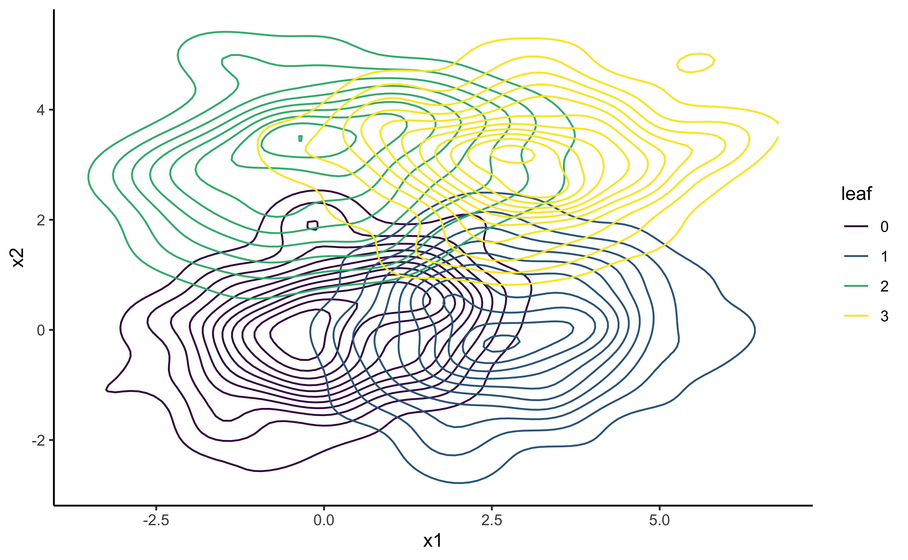
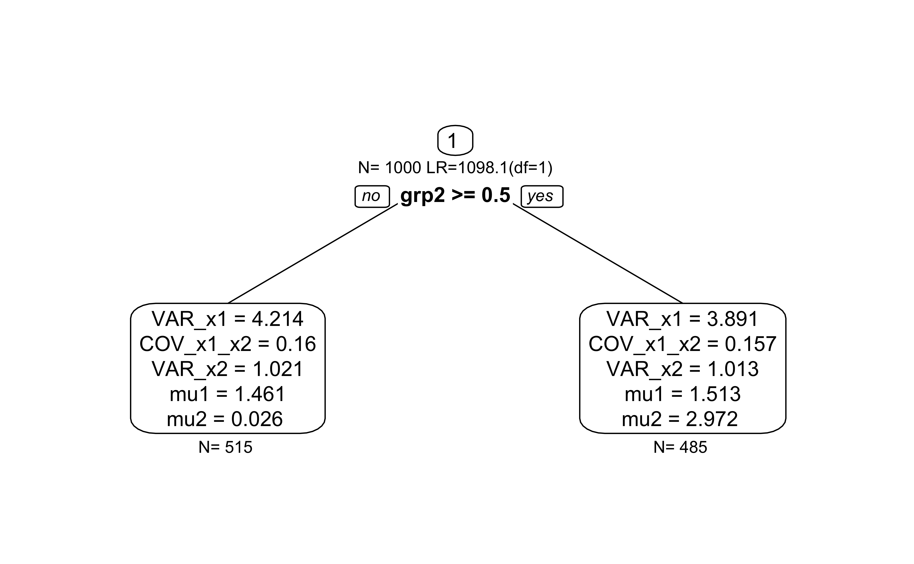
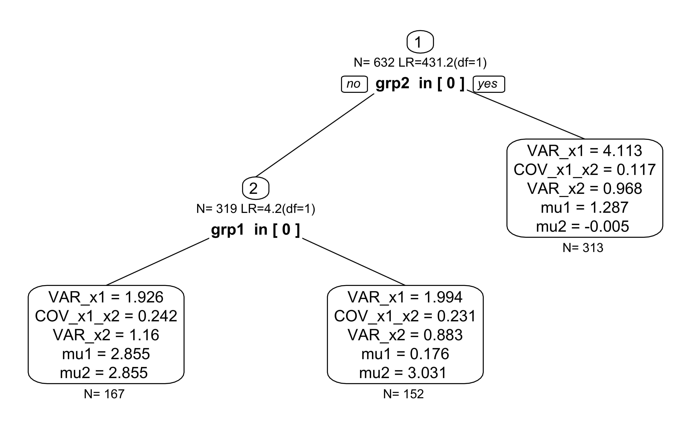
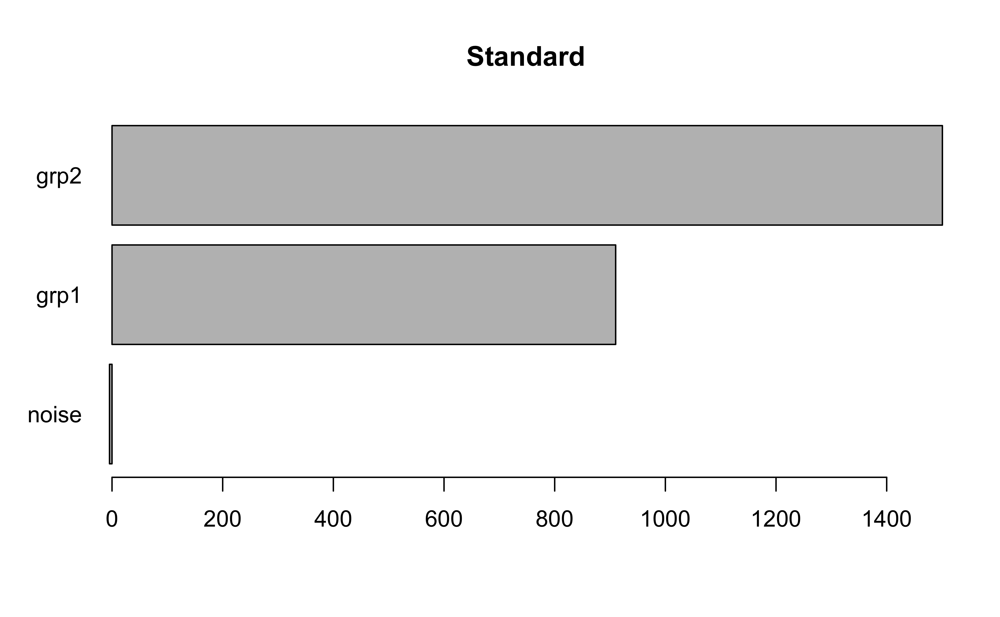
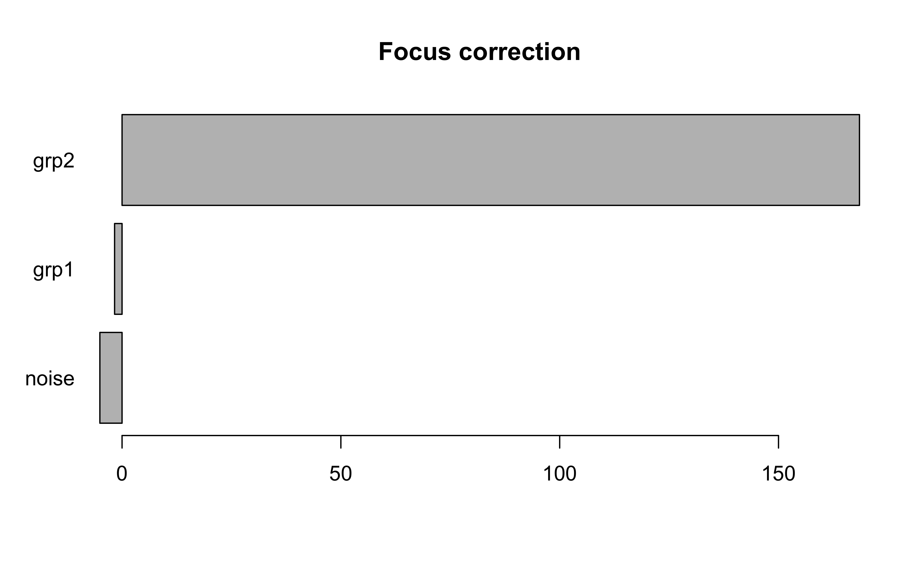

semforest-focus.RmdWe first generate a mixture of bivariate normal distributions. The distributions differ only by their x- and y-displacement, that is, by their mean values. There are two predictors grp1 and grp2 which predict the differences in means. grp1 predicts differences in the first dimension and grp2 predicts differences in the second dimension. Without focus parameter, both predictors are needed to distinguish all four groups. If one of the two means is chosen as a focus parameter, only one of the two predictors is important.
library(semtree) #> Loading required package: OpenMx #> OpenMx may run faster if it is compiled to take advantage of multiple cores. #> Registered S3 method overwritten by 'sets': #> method from #> print.element ggplot2 set.seed(123) N <- 1000 grp1 <- sample(x = c(0,1), size=N, replace=TRUE) grp2 <- sample(x = c(0,1), size=N, replace=TRUE) noise <- sample(x = c(0,1),size=N, replace=TRUE) Sigma <- matrix(byrow=TRUE, nrow=2,c(2,0.2, 0.2,1)) obs <- MASS::mvrnorm(N,mu=c(0,0), Sigma=Sigma) obs[,1] <- obs[,1] + ifelse(grp1,3,0) obs[,2] <- obs[,2] + ifelse(grp2,3,0) df.biv <- data.frame(obs, grp1, grp2, noise) names(df.biv)[1:2] <- paste0("x",1:2) manifests<-c("x1","x2") model.biv <- mxModel("Bivariate_Model", type="RAM", manifestVars = manifests, latentVars = c(), mxPath(from="x1",to=c("x1","x2"), free=c(TRUE,TRUE), value=c(1.0,.2) , arrows=2, label=c("VAR_x1","COV_x1_x2") ), mxPath(from="x2",to=c("x2"), free=c(TRUE), value=c(1.0) , arrows=2, label=c("VAR_x2") ), mxPath(from="one",to=c("x1","x2"), label=c("mu1","mu2"), free=TRUE, value=0, arrows=1), mxData(df.biv, type = "raw") ); result <- mxRun(model.biv) #> Running Bivariate_Model with 5 parameters summary(result) #> Summary of Bivariate_Model #> #> free parameters: #> name matrix row col Estimate Std.Error A #> 1 VAR_x1 S x1 x1 4.0583666 0.18149512 #> 2 COV_x1_x2 S x1 x2 0.1970528 0.11385399 #> 3 VAR_x2 S x2 x2 3.1848900 0.14243121 #> 4 mu1 M 1 x1 1.4858354 0.06370452 #> 5 mu2 M 1 x2 1.4551364 0.05643442 #> #> Model Statistics: #> | Parameters | Degrees of Freedom | Fit (-2lnL units) #> Model: 5 1995 8231.944 #> Saturated: 5 1995 NA #> Independence: 4 1996 NA #> Number of observations/statistics: 1000/2000 #> #> Information Criteria: #> | df Penalty | Parameters Penalty | Sample-Size Adjusted #> AIC: 4241.944 8241.944 8242.004 #> BIC: -5549.028 8266.483 8250.602 #> CFI: NA #> TLI: 1 (also known as NNFI) #> RMSEA: 0 [95% CI (NA, NA)] #> Prob(RMSEA <= 0.05): NA #> To get additional fit indices, see help(mxRefModels) #> timestamp: 2020-11-05 09:15:41 #> Wall clock time: 0.07759309 secs #> optimizer: SLSQP #> OpenMx version number: 2.18.1 #> Need help? See help(mxSummary)
This is how the data look in a 2D space:
df.biv.pred <- data.frame(df.biv, leaf=factor(df.biv$grp2*2+df.biv$grp1)) ggplot(data = df.biv.pred, aes(x=x1, y=x2, group=leaf))+ geom_density_2d(aes(colour=leaf))+ viridis::scale_color_viridis(discrete=TRUE)+ theme_classic()

Now, we choose the mean of the second dimension mu2 as focus parameter. We expect that only predictor grp2. This is what we see in a single tree.
fp <- "mu2" # predicted by grp2 #fp <- "mu1" # predicted by grp1 tree.biv <- semtree(model.biv, data=df.biv, constraints = list(focus.parameters=fp)) #> ✖ Variable grp1 is numeric but has only few unique values. Consider recoding as ordered factor. #> ✖ Variable grp2 is numeric but has only few unique values. Consider recoding as ordered factor. #> ✖ Variable noise is numeric but has only few unique values. Consider recoding as ordered factor. #> ✔ Tree construction finished [took 1s]. plot(tree.biv)

Now, we are repeating the same analysis in a forest.
forest <- semforest(model.biv, data=df.biv, constraints = list(focus.parameters=fp), control=semforest.control(num.trees=5)) #> ❯ Model was not run. Estimating parameters now before running the forest. #> Running Bivariate_Model with 5 parameters #> #> Beginning initial fit attempt #> Running Bivariate_Model with 5 parameters #> #> Lowest minimum so far: 8231.94380334365 #> #> Solution found
#>
#> Solution found! Final fit=8231.9438 (started at 14702.356) (1 attempt(s): 1 valid, 0 errors)
#> Start values from best fit:
#> 4.05836714982455,0.197053351940238,3.18488979134096,1.48583494006395,1.45513684810418
#> ✖ Variable grp1 is numeric but has only few unique values. Consider recoding as ordered factor.
#> ✖ Variable grp2 is numeric but has only few unique values. Consider recoding as ordered factor.
#> ✖ Variable noise is numeric but has only few unique values. Consider recoding as ordered factor.
#> ✔ Tree construction finished [took 3s].
#> ✖ Variable grp1 is numeric but has only few unique values. Consider recoding as ordered factor.
#> ✖ Variable grp2 is numeric but has only few unique values. Consider recoding as ordered factor.
#> ✖ Variable noise is numeric but has only few unique values. Consider recoding as ordered factor.
#> ✔ Tree construction finished [took 2s].
#> ✖ Variable grp1 is numeric but has only few unique values. Consider recoding as ordered factor.
#> ✖ Variable grp2 is numeric but has only few unique values. Consider recoding as ordered factor.
#> ✖ Variable noise is numeric but has only few unique values. Consider recoding as ordered factor.
#> ✔ Tree construction finished [took 3s].
#> ✖ Variable grp1 is numeric but has only few unique values. Consider recoding as ordered factor.
#> ✖ Variable grp2 is numeric but has only few unique values. Consider recoding as ordered factor.
#> ✖ Variable noise is numeric but has only few unique values. Consider recoding as ordered factor.
#> ✔ Tree construction finished [took 2s].
#> ✖ Variable grp1 is numeric but has only few unique values. Consider recoding as ordered factor.
#> ✖ Variable grp2 is numeric but has only few unique values. Consider recoding as ordered factor.
#> ✖ Variable noise is numeric but has only few unique values. Consider recoding as ordered factor.
#> ✔ Tree construction finished [took 3s].
#> ✔ Forest completed [took 13s]By default, we see that individual trees are fully grown (without a p-value threshold). The first split is according to grp2 because it best explains the group differences. Subsequent splits are according to grp1 even though the chi2 values are close to zero. They only appear because there is no p-value-based stopping criterion.
plot(forest$forest[[1]])

Now, let us compare the new permutation scheme
vim <- varimp(forest, method="permutationFocus") vim.old <- varimp(forest, method="permutation") #> ✖ Consider switching to method='permutationFocus' because forest has focus parameters. plot(vim.old, main = "Standard")

plot(vim, main="Focus correction")
